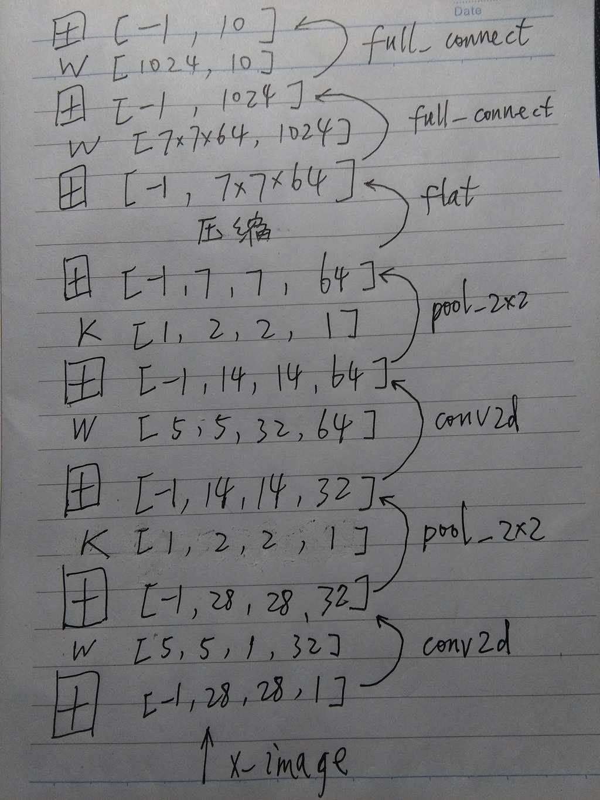

TensorFlow筆記之CNN
 TensorFlow
TensorFlow
TensorFlow是Google公司開源的深度學習框架，我們使用Python可以很方便地使用該框架。 TensorFlow系列筆記主要基於 TensorFlow的官方教程 。 首先，這個筆記主要是記錄CNN（Convolutional Neural Network）的計算過程，數據使用的是MNIST。
首先是數據導入過程，可以使用 這個文件 來幫助導入MNIST數據。
import tensorflow as tf
import input_data
mnist = input_data.read_data_sets("MNIST_data/", one_hot = True)
定義幾個有用的函數方便計算。
def weight_variable(shape):
initial = tf.truncated_normal(shape, stddev = 0.1)
return tf.Variable(initial)
def bias_variable(shape):
initial = tf.constant(0.1, shape = shape)
return tf.Variable(initial)
def conv2d(x, W):
return tf.nn.conv2d(x, W, strides = [1, 1, 1, 1], padding="SAME")
def max_pool_2x2(x):
return tf.nn.max_pool(x, ksize = [1, 2, 2, 1], strides = [1, 2, 2, 1], padding="SAME")
這個筆記的網絡由兩層卷積層及最後的全連接層組成，每層卷積層連接一個池化層，最後使用Softmax得到最終結果。
x = tf.placeholder(tf.float32, [None, 784]) # None for changeable dimention
x_image = tf.reshape(x, [-1, 28, 28, 1])
y_ = tf.placeholder(tf.float32, [None, 10])
W_conv1 = weight_variable([5, 5, 1, 32])
b_conv1 = bias_variable([32])
h_conv1 = tf.nn.relu(conv2d(x_image, W_conv1) + b_conv1)
h_pool1 = max_pool_2x2(h_conv1)
W_conv2 = weight_variable([5, 5, 32, 64])
b_conv2 = bias_variable([64])
h_conv2 = tf.nn.relu(conv2d(h_pool1, W_conv2) + b_conv2)
h_pool2 = max_pool_2x2(h_conv2)
W_fc1 = weight_variable([7 * 7 * 64, 1024])
b_fc1 = bias_variable([1024])
h_pool2_flat = tf.reshape(h_pool2, [-1, 7 * 7 * 64])
h_fc1 = tf.nn.relu(tf.matmul(h_pool2_flat, W_fc1) + b_fc1)
keep_prob = tf.placeholder(tf.float32)
h_fc1_drop = tf.nn.dropout(h_fc1, keep_prob)
W_fc2 = weight_variable([1024, 10])
b_fc2 = bias_variable([10])
y_conv = tf.nn.softmax(tf.matmul(h_fc1_drop, W_fc2) + b_fc2)
cross_entropy = -tf.reduce_sum(y_ * tf.log(y_conv))
train_step = tf.train.AdamOptimizer(1e-4).minimize(cross_entropy)
correct_prediction = tf.equal(tf.argmax(y_conv, 1), tf.argmax(y_, 1))
accuracy = tf.reduce_mean(tf.cast(correct_prediction, tf.float32))
啓動TensorFlow的交互式對話過程。
sess = tf.InteractiveSession()
sess.run(tf.initialize_all_variables())
網絡訓練10000次，大概花費幾個小時。（我使用的是Ubuntu虛擬機，內存1024M。）
for i in range(10000):
batch = mnist.train.next_batch(50)
if i % 100 == 0:
train_accuracy = accuracy.eval(feed_dict = {x: batch[0], y_: batch[1], keep_prob: 1.0})
print "step %d, training accuracy %g" % (i, train_accuracy)
train_step.run(feed_dict = {x: batch[0], y_: batch[1], keep_prob: 0.5})
測試過程使用分批測試，最後取的是均值。（由於我用的是虛擬機，內存較小，直接測試會報內存錯誤。） 這裏，測試誤差約爲99.2%左右。
test_accuracy_mean = 0.0 # Ues this method to avoid MEMORY problem
for i in range(200):
batch = mnist.test.next_batch(50)
test_accuracy = accuracy.eval(feed_dict = {x: batch[0], y_: batch[1], keep_prob: 1.0})
test_accuracy_mean += test_accuracy
print "the mean of test accuracy %g" % (test_accuracy_mean / 200.0)
最後不要忘記關閉TensorFlow的會話過程，或者使用with語法避免之。
sess.close()
以上程序中各個變量的格式如下：
x_image，[batch, in_height, in_width, in_channels]
W_conv，fliter，[filter_height, filter_width, in_channels, out_channels]
K，kernel，每個維度的窗口尺寸。
strides，每個維度的滑動步長。
padding取值，"VALID"，"SAME"
數據格式一般有兩種，NHWC，NCHW。其中，N（batch size），H（height），W（width），C（channels）。
附一個CNN圖解。
